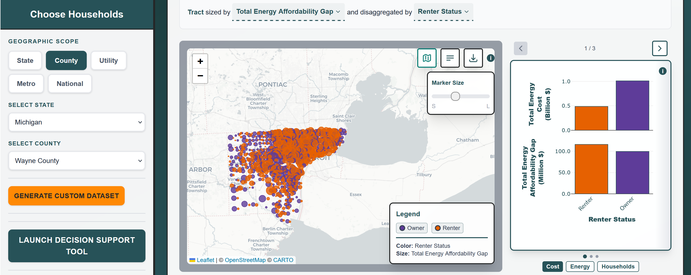
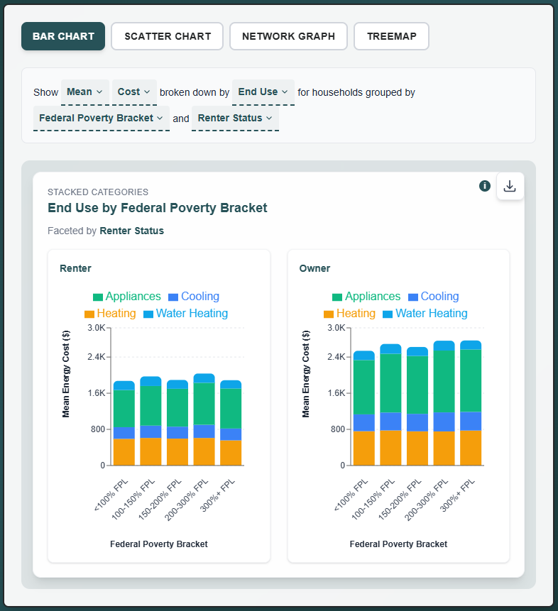
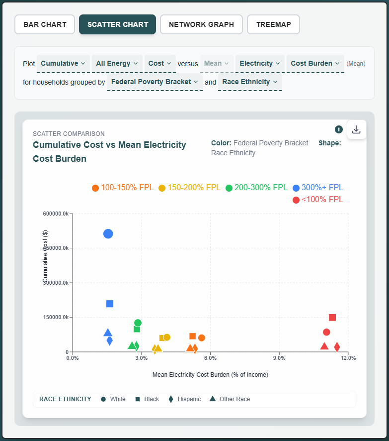
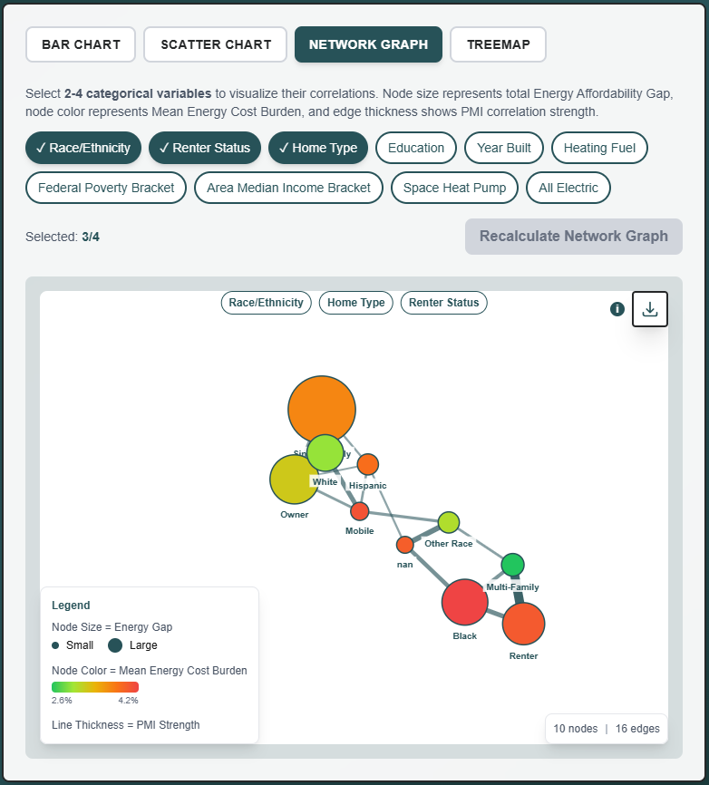
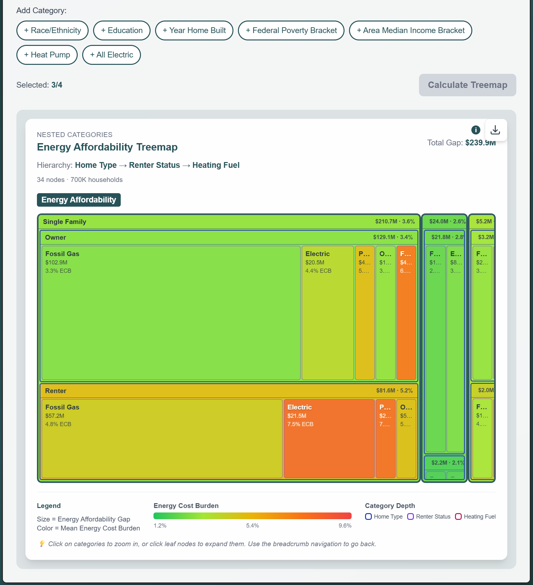
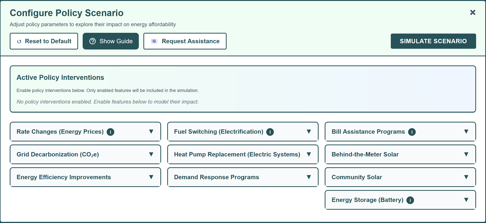
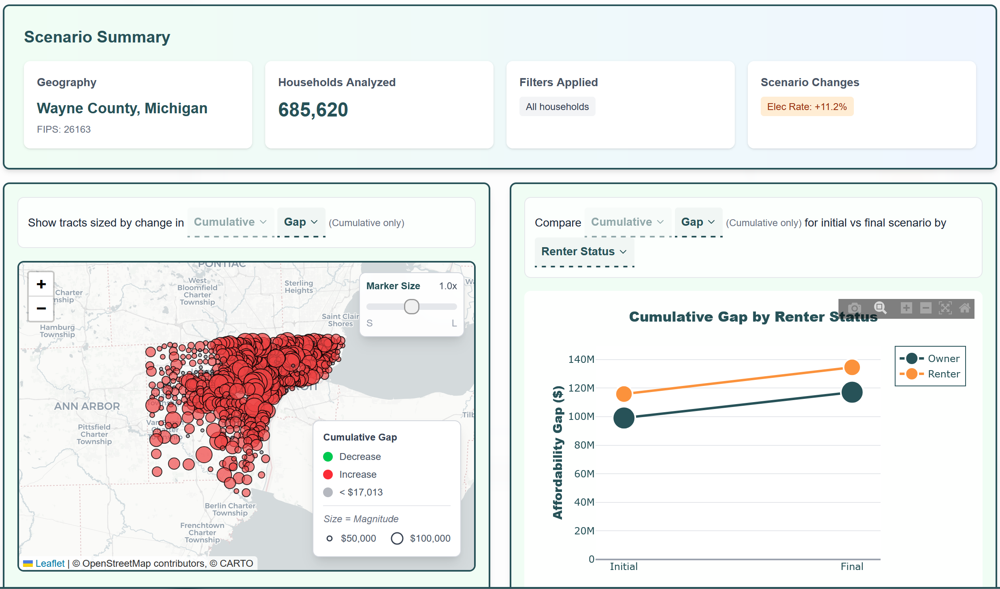

The National Energy Affordability Tool (NEAT) allows users to explore the current landscape of energy equity data as well as model the potential impacts of policy interventions. The opening dashboard offers a map, summary statistics, and various charts/graphs and is set to the existing landscape of data. The Decision Support Tool enables users to adjust policy parameters to explore their impact on energy affordability. Dashboard filters allow users to define the population they wish to focus on.
Below is a guide for each component of the dashboard.
NEAT Landing Page

The landing page dashboard allows you to explore comprehensive data on energy costs, consumption, emissions, and affordability gaps across the United States. This section describes each component of the interface.
The Geographic Scope filter determines the spatial unit of analysis for all visualizations and statistics.
- State: All 50 states plus Washington D.C.
- County: Over 3,000 U.S. counties
- Utility: Electric utility service territory boundaries
- Metro: Census-defined metropolitan statistical areas
- National: Statistics aggregated for the entire United States
This set of filters allows you to narrow your analysis to specific household types based on demographic and housing characteristics. These custom filters use 'AND' logic to combine selections (e.g., a household must satisfy ALL of the chosen criteria to be included in the dataset).
- Poverty Brackets: Filter households by income level, choosing between No Income Filter (all households), FPL Brackets (<100%, 100-150%, 150-200%, 200-300%, 300%+), or AMI Brackets (<50%, 50-80%, 80-100%, 100-150%, 150%+).
- Geographic Filter: Draw a freehand lasso on the map to select a spatial subset of tracts. The selected geographies are AND-ed with any demographic filters.
- Race/Ethnicity: Filter households by the race/ethnicity of the head of household. Categories include White, Black, Hispanic, Asian, and Other Race (which includes Native American, Pacific Islander, and multi-racial households).
- Education: Filter by the educational attainment of the head of household. Options include No Tertiary (high school or less), Some Tertiary (some college/associate degree), and 4+ Tertiary (bachelor's degree or higher).
- Number of Household Members: Filter by the total number of people living in the household. Larger households may have higher absolute energy usage but lower per-person costs.
- Renter Status: Filter by whether the household rents or owns their home. Renters typically have less control over energy efficiency upgrades and may face different energy cost dynamics than owners.
- Home Type: Filter by the type of residential building. Options include Single Family (detached houses), Multi-Family (apartments/condos), Mobile (manufactured/mobile homes).
- Space Heating Fuel: Filter by the primary fuel used for space heating. Options include Electric, Fossil Gas, Fuel Oil, Propane, and Other (which includes wood, solar, and no heating). The fuel type significantly impacts both energy costs and carbon emissions.
- Year Home Built: Filter by the age of the home. Homes built before 1970 typically have less insulation and lower energy efficiency than newer construction.
- Space Heat Pump: Filter by whether the household uses a heat pump for space heating. Heat pumps are typically 2-3x more efficient than resistance heating and can provide both heating and cooling.
- All Electric: Filter by whether the household uses electricity for all energy needs. All-electric homes use electricity for heating, cooling, water heating, and cooking—no natural gas, propane, or fuel oil.
The interactive map displays spatial patterns in energy affordability metrics across your selected geography.
- Coloring: Dots representing either census tracts or counties shaded by selected demographic metric (e.g., Race/Ethnicity, Renter Status, income, etc)
- Sizing: Dots sized by Total Energy Affordability Gap, Mean Energy Burden, Number of Households, or Total Energy Cost.
- Hover information: Click on dots for more detailed information and statistics.
The Summary Statistics panel (to the right of the Affordability Map) provides aggregate numerical summaries for your current selection.
- Cost: Total Energy Cost (the sum of annual energy costs across all households in the selected geography, broken down by demographic group) and Total Affordability Gap (the cumulative dollar amount that households spend on energy above the affordability threshold of 6% of gross income).
- Energy: Total Energy Consumption (the sum of annual energy usage across all households in millions of BTUs, broken down by demographic group) and Total Emissions (the cumulative greenhouse gas emissions in kilograms CO2-equivalent from all household energy use, broken down by demographic group.)
- Households: Number of Households (the total count of households in the selected geography, broken down by demographic group) and Mean Energy Burden (the average energy cost burden—energy costs as a percentage of income—for each demographic group).
The Bar Chart visualization allows comparison of statistics across different household groups using sets of stacked bar charts. This visualization is best for comparing mean or cumulative values across categories. You'll adjust the given sentence in the Bar Chart tab to change what and how the data for your selected geography is shown.
Show [Aggregation Option] [Y-axis Metric] broken down by [X-axis Categorical Variable → Stacked Category] for households grouped by [X-axis Categorical Variable → Stacked Category Grouping] and [Facet/Split].
- Aggregation Option: Cumulative or Mean
- Y-axis Metric: Cost, Energy, Emissions, Gap, or Cost Burden
- X-axis Categorical Variable:
- Stacked Category: End Use or Energy Source
- Stacked Category Grouping: Demographic variables including Federal Poverty Bracket, Area Median Income Bracket, Energy Cost Burden Bracket, Energy Cost Bracket, Race/Ethnicity, Education, Renter Status, Number Household Members, Home Type, Year Home Built, or Space Heating Fuel
- Facet/Split: Other demographic variables or None

The Scatter Plot shows relationships between two energy metrics across household groups within your selected geography. It is best for identifying correlations, outliers, and clusters. For example, it can be used to find groups with both high burdens and high costs. Each point represents a household subgroup. You'll adjust the given sentence in the Scatter Plot to change the data shown.
Plot [Y-axis Variable Aggregation] [Y-axis Categorical Variable] [Y-axis Metric] versus [X-axis Variable Aggregation] [X-axis Categorical Variable] [X-axis Metric] for households grouped by [Grouping/Color] and [Shape].
- Y-axis Variable Aggregation: Mean or Cumulative
- Y-axis Categorical Variable: All Energy, Electricity, Gas, Delivered Fuel
- Y-axis Metric: Cost, Cost Burden, Emissions, Gap
- X-axis Variable Aggregation: Mean or Cumulative (will not always apply)
- X-axis Categorical Variable: All Energy, Electricity, Gas, Delivered Fuel
- X-axis Metric: Cost, Cost Burden, Emissions, Gap
- Grouping/Color: Demographic variable such as Federal Poverty Bracket, Area Median Income Bracket, Energy Cost Burden Bracket, Energy Cost Bracket, Race/Ethnicity, Education, Renter Status, Number Household Members, Home Type, Year Home Built, or Space Heating Fuel
- Shape: Other demographic variables or None
- Hover text: Statistics about the specific grouping

The Network Graph visualizes how household characteristics intersect and relate to each other. It is best for understanding the co-occurrence of characteristics and useful for identifying where disadvantages are compounded. Lines represent the connection between nodes and run between each subcategory of different categorical variables. Select 2-4 categorical variables to visualize their correlations.
- Node size: Represents the total Energy Affordability Gap for a given categorical variable
- Node color: Represents the Mean Energy Cost Burden of a given categorical variable
- Line thickness: Shows PMI correlation strength, with thicker lines indicating a stronger correlation between given categorical variables

The Treemap displays hierarchical breakdowns of households by nested categories. It is best for understanding composition and proportions within categories and allows users to drill down through multiple categorical levels. Select 1-4 categorical variables to create the hierarchical treemap. Keep in mind that order matters: the first category is the outermost level (largest boxes) while the last is the innermost (most detailed). Click on a rectangle to drill down and see details by category.
- Categories: Demographic variables including Home Type, Space Heating Fuel, Renter Status, Race/Ethnicity, Education, Year Home Built, Federal Poverty Bracket, Area Median Income Bracket, Heat Pump, All Electric
- Rectangle size: Total energy affordability gap for households within the given set of categories
- Rectangle color: Mean energy cost burden for households within the given set of categories

Decision Support Tool

The Decision Support Tool allows you to model the impacts of different policy interventions such as energy efficiency programs, weatherization initiatives, and rate changes as well as different technologies like heat pumps and energy storage on household energy costs and emissions.
Configure Policy Scenarios
This panel is where you configure the policy scenarios to model, based on target geography and populations defined on the landing page. Parameters are organized into accordion sections:
Model changes to energy prices, including electricity, gas, propane, and fuel oil. You can view current average rates and enter new rates to model price changes. This simulates the impact of different tariff scenarios.
Model changes in the carbon intensity of electricity to understand the change in household emissions given a cleaner electricity grid. This simulates the impact of grid decarbonization policies like renewable portfolio standards.
Model low-income energy assistance programs such as fixed discounts, percentage discounts, or PIPP (Percentage of Income Payment) programs with income targeting by Federal Poverty Level, Area Median Income, or Universal (no targeting). You can also define program enrollment levels.
Model incentives for households participating in demand response programs for load shifting and peak reduction. Customize annual discount amounts for all-electric and hybrid fuel households, program participation levels, and income-based eligibility.
Model energy consumption reductions from efficiency upgrades by end use and/or fuel type. For example, the change in efficiency from housing envelope improvements like upgraded insulation and air sealing. As energy efficiency programs are often targeted based on income, you can select eligibility criteria for this policy intervention including by Federal Poverty Level bracket, Area Median Income bracket, or Universal (where all households are eligible regardless of income level).
Model switching from fossil fuels (natural gas, propane, or fuel oil) to electricity through heat pump installations for space and water heating. Choose the starting fuel and end use, program enrollment, and income-based eligibility. You can also select the system configuration—whether households are adopting a standard, cold climate, or other efficiency heat pump—and if systems are operating in full electric or a dual fuel mode with existing furnaces used for colder temperatures.
Model replacing existing electric resistance heating and water systems with more efficient heat pump systems using climate-aware COP (coefficients of performance) based on heating degree days by census tract. Customize the number or percentage of households participating and income-based program eligibility requirements.
Model savings from using a home battery to provide time-of-use load shifting (e.g., batteries charge during low-cost, off-peak hours and discharge during high-cost, on-peak hours.) Determine the daily load shift per household, the time-of-use price differential, how many households are participating, and possible eligibility criteria by income.
Model the affordability impacts from individual rooftop solar installations with net metering incentives in place. (Behind-the-meter solar reduces electricity costs through on-site generation and net metering credits.) Customize system sizes using averages or sizing caps, a basic rate and fee structure, net metering configurations, deployment parameters (adoption rates or total MW capacity), and whether systems are limited to owner-occupied homes. An optional configuration allows additional customization for low-income solar programs.
Model the affordability impacts of shared solar arrays with subscription-based bill credits. (Community solar distributes generation from a shared array to subscribers, with different discount rates for low-income and market-rate participants.) Define the average system size, the discount on subscription fees for market-rate participants, low-income discounts, community solar size caps either by total program capacity or low-income enrollment, and whether community solar will be limited to only multi-family or renter households.
Results
After running a scenario, the Results panel displays projected impacts.

Map
The Results Map shows spatial distribution of policy impacts:
- Baseline vs. Scenario comparison
- Change in energy burden, affordability gap, costs
- Emission reductions by geography
Graph
The Results Graph provides quantitative summaries:
- Before/After bar charts for selected metrics
- Distribution curves showing burden shifts
- Cost-benefit analysis outputs
- Total savings, households benefiting, emission reductions
Tips and Best Practices
For Researchers
- Always note the data year (2022) when citing statistics
- Document filter settings used in your analysis
- Use the export feature for reproducible workflows
For Policymakers
- Start with state or utility-level views for jurisdiction-specific insights
- Compare burden rates across demographic groups to identify equity concerns
- Use affordability gap estimates for program sizing and budget planning
For Advocates
- Generate community-specific statistics for local advocacy
- Visualize disparities with demographic breakdowns
- Download charts and maps for presentations and reports